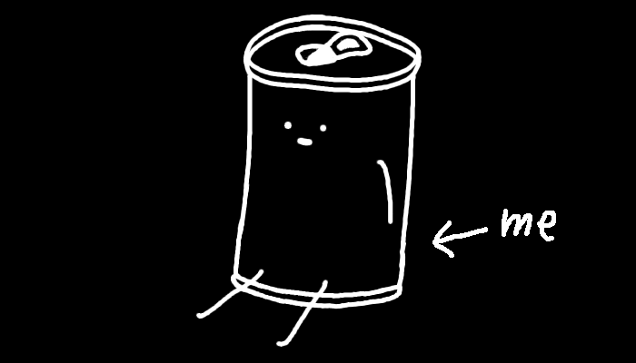

Welcome
You have found my website
My name is BinzuDev

Hello! My name is BinzuDev, previously known as Baked Beans. I like making games and I like memes, so I make games about memes.
My current project is called "WEB ODYSSEY", and is made using RPG Maker MZ.
I've made games using a few different game engines throughout the years, those being:
I've also slightly used :
With varying levels of success
Although I mostly work with codeless engines, I can also code in C++, HTML, CSS, JavaScript, PHP, SQL and Python! (I coded this site myself too!)
I have been wanting to make video games for as long as I can remember, even when I didn't know how to make games, I've been coming up with game ideas and designing
game concepts ever since I was little. I didn't just play with toys as a kid, I would pretend to be playing a video game that I was making up on the fly using the toys as characters.
Anything I looked at or did I could turn it into a game somehow. What I'm getting at here is that I've basically been making games my entire life.
The only difference being that they started becoming "video" in the past few years.
"Shitty RPG: Web Journey", abbreviated as "SRPG", is the first video game I have ever completed. It all started because I had an idea for an rpg game, and found out about RPG Maker, so I downloaded it. Since I knew nothing of the engine when I started, I decided that I would make a little test project to get used to the engine. Then, once I became familiar enough with it, I would be able to make the game I was envisioning. However, to this day, I have never started development on this game. Instead, that little test project I mentioned is what eventually became shitty RPG, which led to the multi-year long project that is Web Odyssey. Since it was a test project, I started out by just doing literally anything funny that came to my mind. At the time, things that were terrible on purpose to be funny and so bad it became good were quite popular. And so I named the game "Shitty RPG", added memes and swear words and had some of the most fun I had ever had. I never really planned to post the game online, I just made it for myself, my family and my friends. This is why this game uses so many default rpg maker assets, it's not like they would realize or care. SRPG's biggest issue in my opinion is that it gets better the further you get into it. Which means that if someone stops playing because of how boring the start is, they'll never get to see all the genuinely cool stuff in the later parts of the game. But even with all of its flaws I'll always be very proud of it.
| Start of development: | May 15 2018 |
| Release of v1.0: | December 31 2018 |
| Public release date: | March 12 2019 |
| Engine: | RPG Maker MV |
| Status: | Finished |
| Current version: | 1.3.3 |
| GameJolt page link | |
Throughout 2019, I was using Scratch to make very simple game prototypes, and in the process, slowing learning the concepts of programming without having to learn how to code. However, I was never really able to make a full game using Scratch. Then came 2020, I was working on a prototype for a tower defense game but it wasn't really going anywhere. As you may or may not be aware, a small little event occurred in march 2020 that caused me to not have school for a little while, you may have heard of it. Either way, I was talking with my dad about the whole situation while he was gaming and he brought up the topic of doing something to profit from that, something about making shirts or something. But then I thought, "hey, I could make a game about it!". And just like that, an epiphany struck me, I had a vision of exactly what would become "Virus Shooter". I rushed on to Scratch and immediately started work on a prototype, I made viruses fall from the top of the screen and made the player at the bottom center of the screen be able to shoot them down by aiming with the mouse. Bam, just like that, in just a few minutes, I had made a prototype that was actually fun to play. A few months later, I had a game with 99 unique waves, 8 upgrade types, 16 possible enemy combinations, 9 unique bosses and an epic bullet hell challenge as a reward for beating the game.
| Start of development: | March 2020 |
| End of development: | July 2020 |
| Engine: | Scratch |
| Status: | Finished |
| GameJolt page link | |
| Scratch page link | |
Around the start of 2021 I had a game idea that I really wanted to make, but Scratch wouldn't be powerful enough to make it work, so I started looking for new game engines. However, everything I tried to learn was just too complicated for me. I tried out Unity, then Unreal Engine and then Godot Engine. But there was always just one crucial mechanic that I was never able to implement right. I then decided to try out one more engine: Clickteam Fusion. It was very simple to use and didn't even use code! However, it's not as powerful as the other engines, being closer to the level of flash games. In the end, I was STILL not able to make a functioning prototype for the main mechanic. So instead, in order to help me learn Clickteam, I decided to give myself a game jam challenge. I had one week to make a simple game. I came up with the idea of an "Asteroids" type game where you can't directly control your movement, but shooting propels you backwards. After a week, I made something that I thought had good potential and kept working on it for a few months. At first I wanted this game to have a lot more content, like a lot more enemy types and bosses, a tutorial mode, and a compendium of info on all the powerups and enemies. However, I stopped working on it because 1: I came up with the idea for my next game and 2: I was getting a little tired of the gameplay. I'm still very proud of the state the game is in right now, it's a fun and simple little high score based game with a ton of visual polish. It's probably the most "Quality over quantity" thing I'll ever make.
| Start of development: | April 27 2021 |
| End of development: | June 2021 |
| Public release date: | October 17 2021 |
| Engine: | Clickteam Fusion 2.5 |
| Status: | Semi-canceled |
| Current version: | 1.01 |
| GameJolt page link | |
My most popular game, "One Night At the Impostor" (ONATI), is what I like to call a "High Quality Shitpost" game. Although, yes, it is just one big meme, it's not trying to be bad on purpose to be funny, it's an actual good fnaf-type game. I got the idea for the game when I noticed a few similarities between Five Nights at Freddy's and Among Us's gameplay mechanics. Both had a camera system, the ability to close doors, vents that the bad guys could use, and both were insanely and unreasonably popular on the internet. Plus, I now knew how to use Clickteam, literally the same engine used to make the original fnaf games! The very same day I had that thought, I started work on the game. I did a few changes to the typical fnaf formula to make my game a bit more unique, for instance, instead of having five(or more) nights in increasing difficulty, I made it to be only one night with 3 difficulty levels that you could choose from on the title screen. Instead of the goal being to survive for a set amount of time, you have to complete a set of tasks, just like in among us, to beat the night. To compliment this mechanic, I added a high score system based on how fast you were able to win for each difficulty. This is an incentive for players to replay the game in order to get a better time, thus adding some replay value that most fnaf games don't have. Some people even speedran the game! I am really proud of how this game turned out, and happy it got some recognition, but I do wish I had made this game just a few months sooner, when the among us meme train was really at its peak.
| Start of development: | June 28 2021 |
| Initial release date: | August 8 2021 |
| Engine: | Clickteam Fusion 2.5 |
| Status: | Finished |
| Current version: | 1.05 |
| GameJolt page link | |
| Speedrun world record | |
This game is a sequel to my first game "Shitty RPG: Web Journey" and improves on every single possible aspect. I started Web Odyssey in September 2021, and I am still not done to this day. This is the longest I have ever worked on anything ever. While the original SRPG took about 9 months to make, it used a ton of default rpg maker assets and maps. For this game, I am making absolutely everything myself (minus the music), and my goal is to not include any default RM assets. Since I also now know how to code, I am able to customize this game to the molecular level, and do things that would be impossible with RM's visual scripting interface. The game has a custom battle system inspired by the Mario & Luigi rpg games that has never been done in RM before as far as I am aware. This game takes place in a near-future/alternate reality where people surf the web in virtual reality. The main characters go on an adventure on the internet visiting various different websites and social medias, fighting memes and internet celebrities all in order to find one of their long lost friend.
| Start of development: | September 20 2021 |
| Planned release date: | 2024+ |
| Engine: | RPG Maker MZ |
| Status: | In development |
| GameJolt page link | |
| Offical trailer | |
If you need to contact me for any reason, sending me a message on discord is your best bet at getting a quick answer.
If you do not want to send a friend request, you can temporarily join my server to send me a direct message.
*Please note that I have a policy of not clicking on any links sent from strangers*
If you need to contact me for anything serious or business related, you can reach me at: binzudevcontact@gmail.com